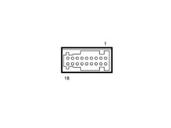

5550D22 REVERSING LIGHT SWITCH - R+R
- Path
- Procedures > 55 ELECTRICAL EQUIPMENT > 5550 WARNING AND MANOEUVRING INDICATORS > 5550D BRAKE AND REVERSING LIGHTS > 5550D22 REVERSING LIGHT SWITCH - R+R
- Kind
- repair procedure (removal / refitting; the operation number is the code)
- Applies to
- all engines; all production periods
- Interactive page
- https://sloeber94.github.io/elrnDB-fPnd/en/#/169002231
Applies to: all engines; all production periods
 Removing
Removing
 Refitting
RefittingOp. 5530B56 BATTERY DRIP TRAY COVER - R.R.
Op. 5530B52 BATTERY CRADLE - R R
1. Disconnect electrical connection (1a) and unscrew and remove the reversing light switch (1b).
Description | Connector | |
|---|---|---|
1a | Reversing lights switch | I20 |

Applies to: all engines; all production periods
Refitting
RemovingFit the reversing light switch in its seat and tighten.
Connect the electrical connection.
Description | Connector | |
|---|---|---|
- | Reversing lights switch | I20 |
Op. 5530B52 BATTERY CRADLE - R R